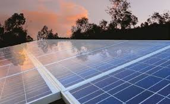

La energía solar: el futuro sostenible
La energía solar se está consolidando como la más accesible y eficiente en el mundo. Cada año, la capacidad instalada crece a un ritmo récord.
Leer más...
Hoy en día, los paneles solares fotovoltaicos permiten abastecer hogares, industrias y hasta ciudades enteras. Además, su coste de producción disminuye constantemente.